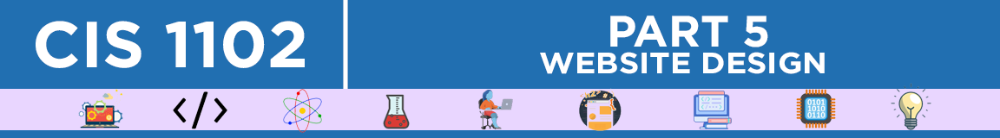

Home
Welcome to Shmooniverse, your gateway to exploring my journey in the universe of IT. This site serves as a digital portfolio showcasing my projects, skills, and progress as a BSIT student.
Purpose
The purpose of this website is not only to share my work but also to inspire and connect with like-minded individuals who are passionate about technology and creativity. Whether you're a fellow IT enthusiast, a potential collaborator, or simply curious, there's something here for everyone.
Portfolios

About Me
Hi, I'm Wayne Czar A. Ricaplaza, a passionate student currently pursuing a Bachelor of Science in Information Technology. I'm deeply fascinated by the world of technology and how it is shaping the future of our world.
My journey into IT began with an interest in space and technology. I created Shmooniverse to reflect both my enthusiasm for IT and my love for the cosmos. It's a space where creativity meets innovation, and I aim to share that with the world.
Inspirations
- Space and the Universe: The boundless beauty and mystery of the cosmos inspire me to think beyond limits.
- Technology: The constant evolution of IT motivates me to learn and grow.
- Problem Solving: I enjoy tackling challenges and finding solutions that make a difference.
A Little More About Me
When I'm not working on IT projects, I explore new tech trends, learn about different cultures, and experiment with creative designs. My goal is to continuously improve my skills and contribute meaningfully to the IT field.